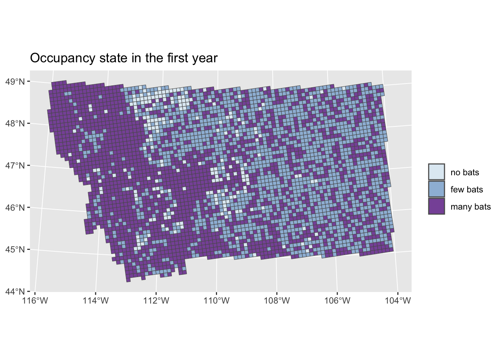
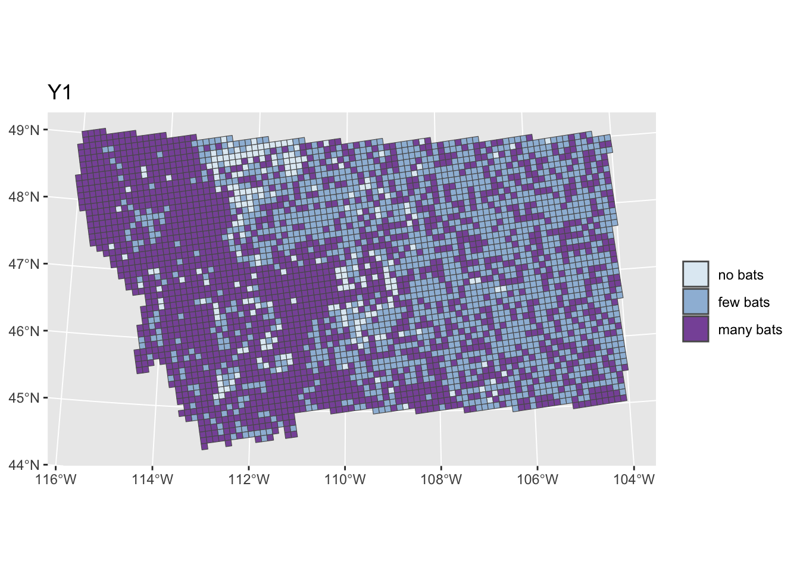
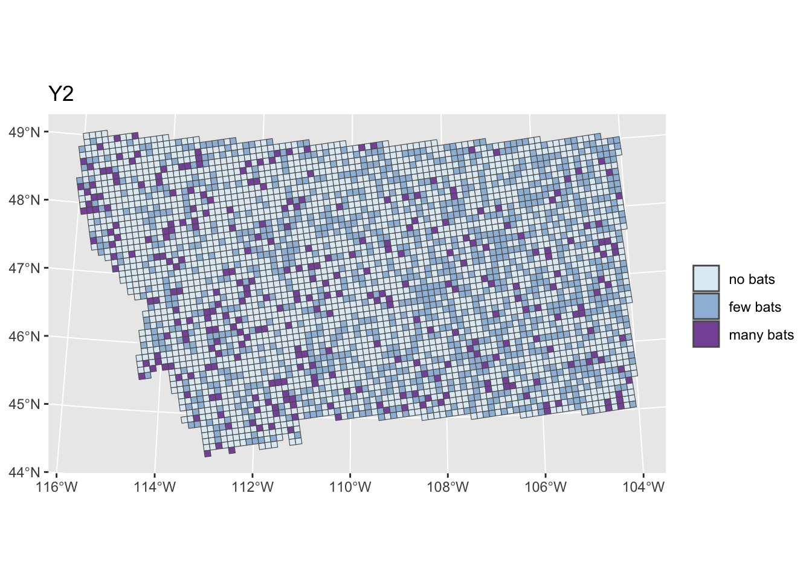
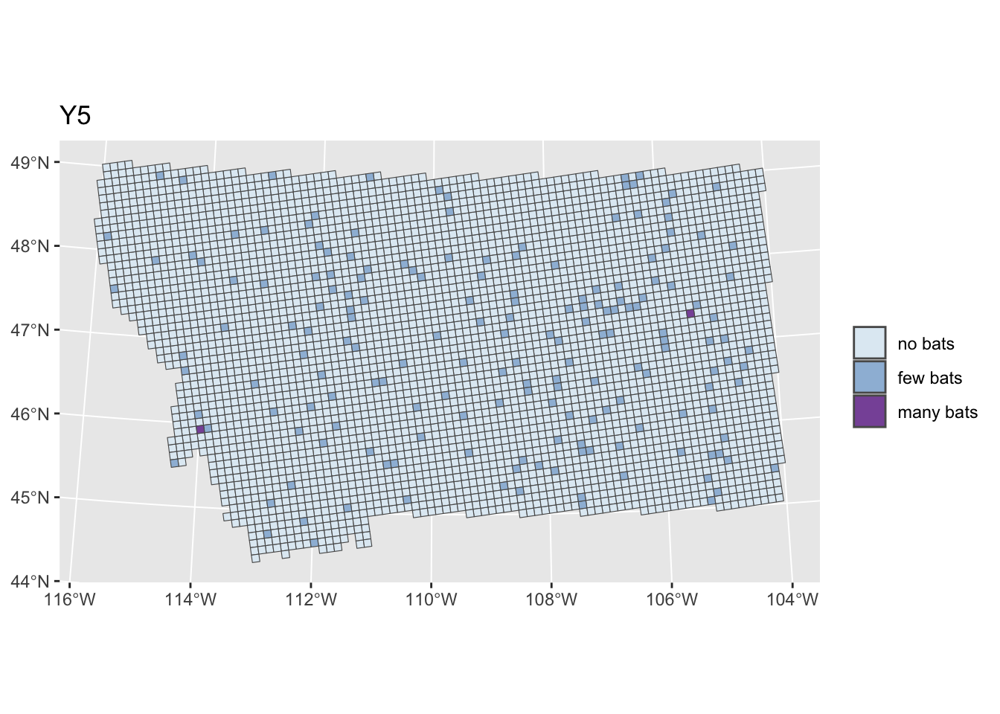

Predictions
Overview
We are generating predictions at the grid cell scale (10x10km) using a set of covariates from the latest NABat report. We are focusing on the state of Montana, and incorporating different jurisdictions that may or may not implement all management actions.
Parameters
For now, these parameters are not informed by the data model, they are just to build the structure of the simulation. We set the parameters \(psi\) and \(r\) to generate the occupancy state in the first year for each grid cell.
## CELL LEVEL --------
ncells <- length(unique(mt_covariates$GRTS_ID))
nregions <- length(unique(mt_covariates$eco3_name))
nyears <- 5
# Giving intercepts for each ecoregion
alpha.lpsi <- runif(nregions, 0, 2)
alpha.lr <- runif(nregions, 0, 2)
# Coefficients
# beta.lpsi <- rnorm(8)
# beta.lr <- rnorm(3)
model_coefficients_psi_r <- readRDS(file = "modelouts/model_coefficients_psi_r.RDS") %>%
filter(model == "M2")
beta.lpsi <- model_coefficients_psi_r %>% filter(coeff == "psi") %>% pull(means)
beta.lr <- model_coefficients_psi_r %>% filter(coeff == "r") %>% pull(means)
# build the parameters psi and r based on covariates
mt_covariates %>%
st_drop_geometry() %>%
transmute(GRTS_ID,
elev = center_scale(DEM_max),
forest = center_scale(p_forest),
temp = center_scale(mean_temp),
precip = center_scale(precip),
wetlands = center_scale(p_wetland),
physdiv = center_scale(physio_div),
karst = karst,
region = as.numeric(as.factor(eco3_name))) %>%
mutate(lpsi = alpha.lpsi[as.numeric(region)] + beta.lpsi[1] * elev + beta.lpsi[2] * elev^2 +
beta.lpsi[3] * temp + beta.lpsi[4] * temp^2 + beta.lpsi[5] * physdiv +
beta.lpsi[6] * precip + beta.lpsi[7] * forest + beta.lpsi[8] * wetlands,
psi = exp(lpsi)/(1+exp(lpsi)),
lr = alpha.lr[as.numeric(region)] + beta.lr[1] * karst +
beta.lr[2] * forest + beta.lr[3] * physdiv,
r = exp(lr)/(1+exp(lr))) -> scaled_covariates
psi <- scaled_covariates$psi
r <- scaled_covariates$r
Omega <- matrix(c(1-psi, psi*(1-r), psi*r), ncol = 3)Y1 predictions
Show the code
z <- array(NA, dim = c(ncells, nyears))
# Calculate state for each cell in year 1
for(i in 1:ncells){
draw1 <- rmultinom(1,1,Omega[i,])
z[i,1] <- which(draw1 == 1)
}
# Viz year 1
cbind(grid_geometry, z1 = z[,1]) %>%
mutate(y1 = case_when(
z1 == 1 ~ "no bats",
z1 == 2 ~ "few bats",
z1 == 3 ~ "many bats"
)) %>%
mutate(y1 = factor(y1, levels = c("no bats", "few bats", "many bats"))) %>%
ggplot() +
geom_sf(aes(fill = y1)) +
scale_fill_manual(values = states_col) +
labs(fill = "", title = "Occupancy state in the first year") -> plotY1
states_legend <- get_legend(plotY1)
plotY1
# Define transition probability matrix (Phi)
# for now, just using the same matrix for all sites and all years
# Assuming no changes and no management
gamma1 <- 0.001
gamma2 <- 0.001
phi1 <- 0.5
G <- 0.01
phi2 <- 0.3
D <- 0.5\[ \Phi_{z{(t-1)}, z{(t)}} = \begin{bmatrix} 1-\gamma_1 & \gamma_2 & 0 \\ 1-\phi_1 & \phi_1(1-G) & \phi_1G\\ 1-\phi_2 & \phi_2D & \phi_2(1 - D) \end{bmatrix} \]
Show the code
Phi <- matrix(c(1-gamma1, gamma1*(1-gamma2), gamma1*gamma2,
1-phi1, phi1*(1-G), phi1*G,
1-phi2, phi2*D, phi2*(1-D)), nrow = 3, byrow = TRUE)
# fill the next years
for(t in 2:nyears){
for(i in 1:ncells){
draw1 <- rmultinom(1,1,Phi[z[i,t-1],])
z[i,t] <- which(draw1 == 1)
}
}
as.data.frame(z) %>%
cbind(grid_geometry, .) %>%
pivot_longer(., cols = starts_with("V"), names_to = "year", values_to = "yms") %>%
mutate(year = str_remove(year, "V")) %>%
# mutate(yms = as.factor(yms)) %>%
mutate(yms_txt = case_when(
yms == 1 ~ "no bats",
yms == 2 ~ "few bats",
yms == 3 ~ "many bats"
)) %>%
mutate(yms_txt = factor(yms_txt, levels = c("no bats", "few bats", "many bats"))) -> yms_predictionYears 2…t



